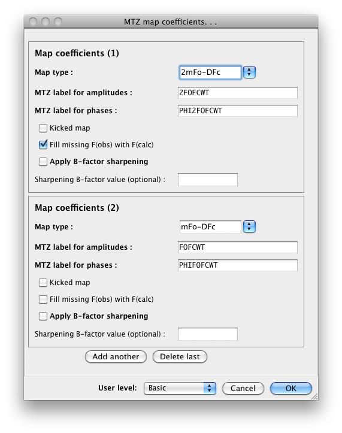

Because of the differences in calculation method and input data, there is no single unified interface for creating any electron density maps; instead, separate programs are grouped together in the main GUI. For omit maps, a modified interface to AutoBuild is available; consult the AutoBuild documentation for rules on use. Isomorphous difference maps have a separate GUI, which takes two reflection files as input. For maps using phases from a model, use the "Create Maps" module. All of these programs write output as an MTZ file; the latter two may optionally output XPLOR or CCP4 maps (calculated to cover the PDB file used for phasing) if desired.
This is a frontend to phenix.maps, which shares a common set of parameters with phenix.refine. Many user-defined map types are possible, but the program defaults to the most common ones, 2mFo-DFc and mFo-DFc difference maps. Some additional predefined types are available in the drop-down menus.

The pre-defined maps include all common likelihood-weighted difference maps, anomalous difference map, likelihood-weighted F(obs) or F(calc) maps, and anomalous log-likelihood gradient (LLG) maps generated by Phaser. Custom map types can be defined by typing in an appropriate string in a format similar to those already shown; the map generator will parse the string to determine the components used.
By default the program only generates an MTZ file containing the map coefficients, but you may separately define maps to be generated in X-PLOR or CCP4 format by clicking the button labeled "CCP4 or XPLOR maps". However, if you leave these undefined, the GUI will automatically run the FFT to generate CCP4-format files if you click the "Open in PyMOL" button once map coefficients are available.
- Map quality may be heavily influenced by reflections that are missing due to errors in data collection or processing. Substituting F(calc) for missing F(obs) increases model bias but often results in a more easily interpreted map; the default maps output by phenix.refine (and REFMAC) are "filled" maps. In phenix.create_maps, the default maps are filled, and we recommend using this option unless you are particularly worried about model bias.
- Output MTZ column labels must be unique; the predefined map types have associated predefined labels, but you can change these if you wish.
- Anomalous difference maps require anomalous data (i.e. F+,F- or I+,I-); the precalculated anomalous difference DANO generated by some CCP4 programs is not suitable.
- If you are using neutron data, set the scattering table to "neutron"; otherwise, leave it set to "n_gaussian".